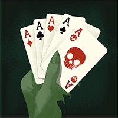

Helden › Mystiker
Paige
Paige ist ein spielbarer Held in Deadlock. Die Bibliomantin liest in Bibliotheken der fünf Boroughs Geschichten vor — und sucht dabei unbeirrbar nach ihrem verschwundenen Bruder. Ihre Bücher beschwören Drachen, Ritter und rettende Barrieren.
Hintergrund
Als Tochter eines Händlers für seltene Bücher wuchs Paige in einem liebevollen Zuhause auf, in dem Güte, Magie und das Geschichtenerzählen an erster Stelle standen. Doch während Paige die Werte ihrer Eltern aufsog, tat ihr kleiner Bruder Bryce das nicht.
Der rebellische Teenager verübelte seiner Familie nicht nur die zuckersüße Grundhaltung, sondern auch das Verbot, sich mit Magie zu befassen, die sie für zu gefährlich hielten. Paige versuchte alles, um ihn aus Schwierigkeiten herauszuhalten — doch je mehr die große Schwester wusste, was das Beste für ihn war, desto weiter wandte er sich ab. Was Bryce tat, um aus dem Haus zu fliegen, weiß Paige bis heute nicht … nur, dass sie aus der Bibliothek heimkam und ihren Bruder fort und ihre Eltern in Tränen vorfand.
Aus Tagen wurden Wochen, Monate, Jahre. Paige wurde zur talentierten Bibliomantin, die als Geschichtenerzählerin in den Bibliotheken der fünf Boroughs ihr Auskommen findet. Ihre Eltern schweigen bis heute über Bryce — doch Paiges Entschlossenheit, ihn zu finden, ist nur gewachsen. Sie wird herausfinden, was mit ihrem Bruder geschah … und weder Mensch noch Gott wird sich ihr in den Weg stellen.
Spielstil
Paige schützt und verstärkt ihr Team aus der zweiten Reihe: Plot Armor macht einen Verbündeten zum Vollstrecker, ihr Bookwyrm brennt Schneisen in die Lane — und Rallying Charge schickt heilende Ritter quer durch die ganze Stadt.
Fähigkeiten
Bookwyrm
Taste 1Beschwört einen Buchdrachen, der vorwärtsfliegt, Geist-Schaden verursacht und eine brennende Spur hinterlässt.
Abklingzeit: 33 s
Plot Armor
Taste 2Verleiht einem Verbündeten eine Barriere — solange sie hält, erhält er Bonus-Waffenschaden.
Abklingzeit: 28 s
Captivating Read
Taste 3Belegt ein Gebiet mit latenter Magie: erst Verlangsamung, dann Detonation mit Geist-Schaden und Festhalten.
Abklingzeit: 30 s
Rallying Charge
Taste 4 UltimateSchickt eine Welle spektraler Ritter durch die ganze Stadt — heilt Verbündete, schadet Gegnern; je weiter die Ritter reiten, desto stärker der Effekt.
Abklingzeit: 220 s
Basiswerte
| Wert | Basis (Stufe 1) | Kategorie |
|---|---|---|
| Maximale Gesundheit | 680 | Vitalität |
| Gesundheitsregeneration | 2 / s | Vitalität |
| Lauftempo | 6,9 m/s | Bewegung |
| Sprint-Bonus | +3,5 m/s | Bewegung |
| Ausdauer | 3 | Bewegung |
| Leichter Nahkampfschaden | 42 | Waffe |
| Schwerer Nahkampfschaden | 120 | Waffe |
Beliebte Builds
Diese Daten stammen direkt aus dem Build-Browser im Spiel: die drei meistfavorisierten Builds für Paige, sortiert nach der Zahl der Spieler, die sie gespeichert haben. Klick einen Build an, um die Item-Reihenfolge zu sehen.
№1 ITw1xI | Paige Spirit Caster/AOE Enjoyer 30.716 Favoriten
„Vortex Web/DMG/Support Build Enjoyer“





№2 Piggy`s Support Paige (twitch.tv/piggyxdd) 30.350 Favoriten
„All items explained. (Can buy left -> Right) Im still testing builds on this litte redhead gremlin.“


№3 Piggy`s Compy Support Paige (twitch.tv/piggyxdd) 29.762 Favoriten
„All items explained. (Can buy left -> Right) Im still testing builds on this litte redhead gremlin.“


Warum sind das die besten Builds?
Die drei Builds wurden zusammen über 90.828-mal von Spielern gespeichert — Favoriten sind das stärkste Qualitätssignal im Build-Browser, denn ein Build, den so viele Spieler über Monate und Patches hinweg behalten, hat sich in echten Matches bewährt. Auffällig ist der Fokus auf Geist-Items: Der Großteil von Paiges Schlagkraft steckt in den Fähigkeiten, und Geist-Kraft skaliert genau diese. Als Einstieg gilt: Folge der Item-Reihenfolge des №1-Builds Kategorie für Kategorie und passe erst mit wachsender Erfahrung an dein Matchup an.
Trivia
- Paiges interner Klassenname in den Spieldaten lautet
hero_bookworm. - Die Spieldaten führen den Helden mit den Tags Helpful, Protector, Booksmart.
- Die Einstiegskomplexität liegt bei 1 von 3 — Kategorie „Einsteiger“.